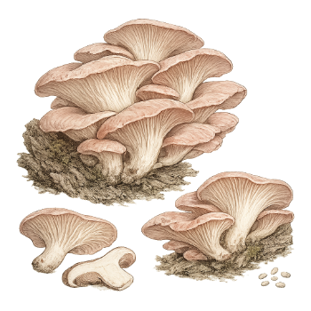

Ficha de especie · Pleurotus djamor
Orellana rosada
Pleurotus djamor
Es una orellana de color rosado que prefiere el calor. La estudiamos para más adelante: primero estabilizamos el programa de shiitake.
- Etapa
- Candidato futuro. Se activará después del shiitake.
- Condición
- Pide más calor que otras orellanas.
- Origen
- Tenjo, Cundinamarca, Colombia

Lo que ya sabemos.
Resumen de estudios publicados. Ninguna cifra está validada en Tenjo.
-
Prefiere el calor
Los estudios citan entre 22 y 30 °C, y algunos boletines entre 24 y 32 °C. No afirmamos que el clima de Tenjo alcance sin medirlo.
-
Dura pocos días
Un boletín técnico describe una textura firme y una vida útil de 3 a 4 días. Antes de priorizarla hay que probar la cadena de frío.
-
El rendimiento varía mucho
Un estudio filipino midió 31 % de eficiencia biológica con paja de arroz, y un boletín indio reporta entre 80 y 100 %. No hay un valor esperado único para nuestro sistema.
Seguridad
Dos líneas separadas.
Esta especie también se estudia para degradar contaminantes. Esos ensayos se mantienen aparte de la producción de alimento, en espacios y registros distintos.
Lo que aún medimos.
Antes de activar la especie necesitamos cinco respuestas.
-
Cepa disponible en Colombia
Hay que identificar una cepa comercial con ficha técnica y spawn trazable.
-
Aire y forma
Mediremos el CO₂ y el caudal de la sala para ver cómo cambia la forma de la seta. No usamos un número de otro cultivo.
Esta es una ficha de especie, no una oferta. No hay producto, precio ni disponibilidad. Ningún resultado de laboratorio sobre remediación se presenta como afirmación sin un piloto y un análisis de inocuidad.